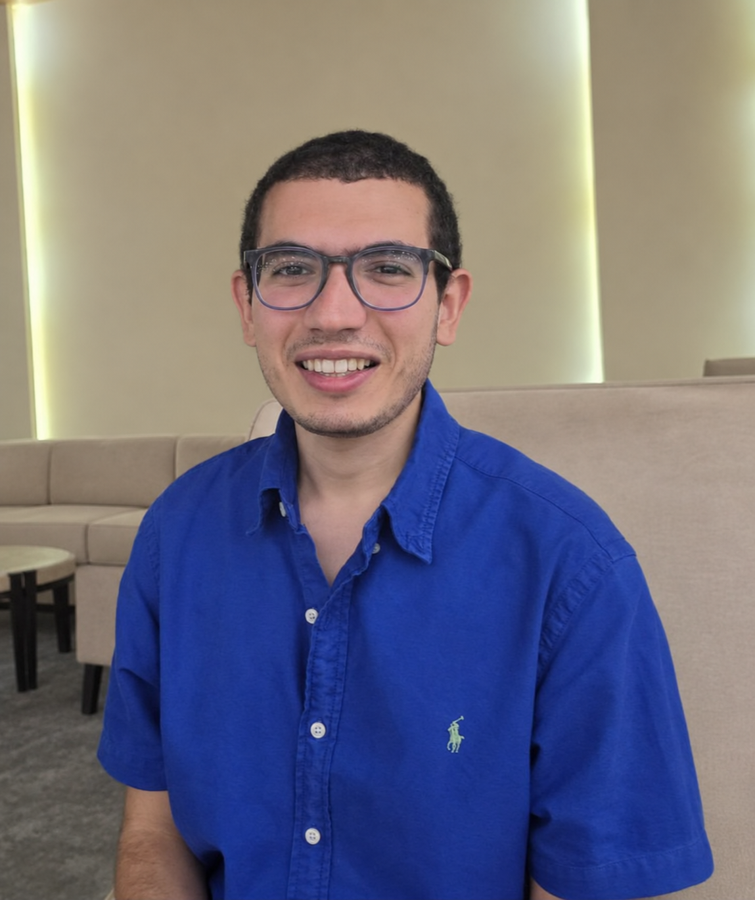

Theorem (Jelassi, Portier, Sarkar, 2025)
For every connected graph G on n vertices, there exists a vertex that activates the entire graph in expected time n/2 + O(1).

I am a Scientific Assistant in the Quantum Complexity and Cryptography Lab at EPFL, hosted by Prof. Thomas Vidick and working with Prof. Alessandro Chiesa's group. I completed a BSc (2024) and an MSc (2026) in Mathematics at EPFL, with a minor in Cybersecurity.
My research interests include quantum cryptography, quantum computing, quantum complexity, and interactive proof systems.
Since August 2026, I have been working with Zihan Hu and Zijing Di at EPFL in the Quantum Complexity and Cryptography Lab on quantum cryptography, constructing succinct arguments for QMA from quantum interactive oracle proofs.
In June and July 2026, I was a pre-doctoral researcher under the supervision of Dr. André Chailloux at INRIA (Institut National de Recherche en Informatique et en Automatique) Paris in the COSMIQ team. I worked on quantum cryptanalysis for cryptography based on error-correcting codes as well as Euclidean lattices, attacking LWE with a quantum algorithm.
In spring 2026, I worked on quantum cryptography, proving the security of cryptographic constructions in the quantum random oracle model, with Zihan Hu and Zijing Di in the COMPSEC group at EPFL.
During my master's studies, I spent a year conducting research on combinatorics in Prof Oliver Janzer's group. This work led to a paper on probabilistic combinatorics and a single-authored manuscript on Ramsey theory, based on my master's thesis.
In summer 2024, I worked under the supervision of Prof. Maryna Viazovska at the Chair of Number Theory, EPFL on Algebraic Number Theory, studying her paper. I tried to extend this result to a broader class of lattices.
Mehdi Jelassi, J. Portier, R. Sarkar
Submitted.
Mehdi Jelassi
In preparation (expected on arXiv in November 2026).
Mehdi Jelassi, Z. Di, Z. Hu
In preparation (expected on arXiv in November 2026).
I was a Teaching Assistant at EPFL for the following courses:
Other services at EPFL:
Faculty Recruitment Committee Member Fall 2023/ Fall 2024/ Fall 2025
In our paper Jelassi, Portier, and Sarkar (2025), I worked on an extremal question about a growth process in which vertices become active randomly according to the following rule: in each step, an active vertex u with x active neighbors activates each of its inactive neighbors with probability (x + 1)/deg(u). I came up with new ideas which consist of designing a suitable optimization function for the proof of Theorem 1 and a submartingale for the proof of Theorem 2. While writing this paper, I made use of tools learned in my courses such as Azuma's inequality and Doob's Optional Stopping Theorem. We proved that
Results
Theorem (Jelassi, Portier, Sarkar, 2025)
For every connected graph G on n vertices, there exists a vertex that activates the entire graph in expected time n/2 + O(1).
Theorem (Jelassi, Portier, 2025)
For every connected graph G on n vertices, there exists a set of O(n1/2) vertices that activates the entire graph in expected time O(n1/2).
To see that the bounds in these two results are tight up to the implicit constant factors, consider the path. Our proof of Theorem 2 relies on completely different ideas from the proof of the previous bound by Geneson and Hogben (see Hogben for their proof).